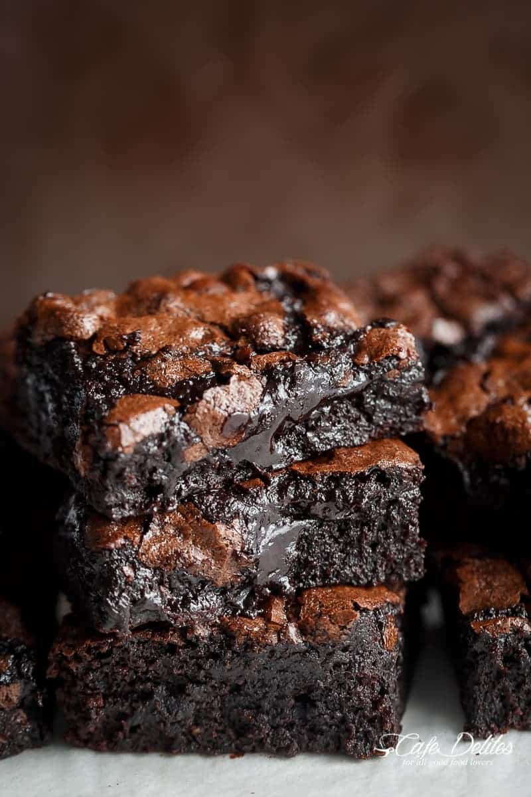

Fudge Brownies

The best, fudgy one bowl cocoa brownies! These brownies have a super fudgy center without losing that crispy, crackly top. So simple, but SO delicious; guarenteed to be a family favorite. They are gone in seconds.
Ingredients
- 1/2 cup unsalted butter, melted and hot
- 1 tablespoon cooking oil
- 1 1/8 cup white granulated sugar
- 2 large eggs
- 2 teaspoons pure vanilla extract
- 1/2 cup all purpose flour
- 1/2 cup unsweetened cocoa powder
- 1/4 teaspoon salt
Steps
- Preheat oven to 350º F
- Lightly grease an 8-inch square baking pan with cooking oil spray. Line with parchment paper (or baking paper); set aside.
- Combine hot melted butter, oil and sugar together in a medium-sized bowl. Whisk well for about a minute. Add the eggs and vanilla; beat until lighter in colour (another minute).
- Sift in flour, cocoa powder and salt. Gently fold the dry ingredients into the wet ingredients until JUST combined.
- Pour batter into prepared pan, smoothing the top out evenly.
- Bake for 20-25 minutes, or until the centre of the brownies in the pan no longer jiggles and is just set to the touch.
- Remove and allow to cool to room temperature.